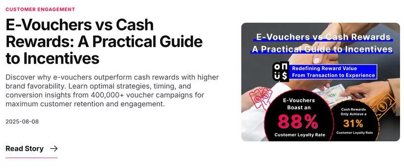

87%
EDM 開信率 （200+ 間企業）
5萬+
LinkedIn 三個月 累積瀏覽
20-30%
官網自然流量 成長
100+
LinkedIn 新增關注者
挑戰 Challenge
一家香港的電子禮券金融科技新創想進台灣，但在台灣沒有聲量、沒有案例、沒有本地內容。我是公司第一個做台灣市場的人，等於從空白開始建立這個品牌在台灣的存在。
我做的事 What I did
- 社群：獨立規劃設計素材、撰寫貼文、安排 6–8 月 LinkedIn 經營方向與排程。
- 官網：完成 sitemap 邏輯梳理與 Figma 交互架構設計，輸出可演示的 DEMO；導入 AEO 提升網頁在 AI 搜尋引擎的能見度。
- 陌生開發：製作專攻台灣產業的 EDM 素材並協助發送，廣撒 200 多間企業。
- 內容：撰寫 3–4 篇針對台灣市場洞察的中英文金融科技部落格，發佈於官網並以 SEO / AEO 搭配關鍵字操作。
- 研究：加入香港團隊協作年度全英文白皮書，調取公司內部 campaign 數據、運用樞紐分析拆解電子禮券兌換週期與區域市場趨勢。
學到什麼 Takeaway
這是我第一次完整跑「金融科技產品 → 官網數位體驗 → 商業轉化」的鏈路。也是第一次做全英文的行業研究輸出——從執行端的傳播，跨到研究端的視野，這個轉換比我想像中難，但也是收穫最大的地方。
作品與現場 Gallery・點擊放大